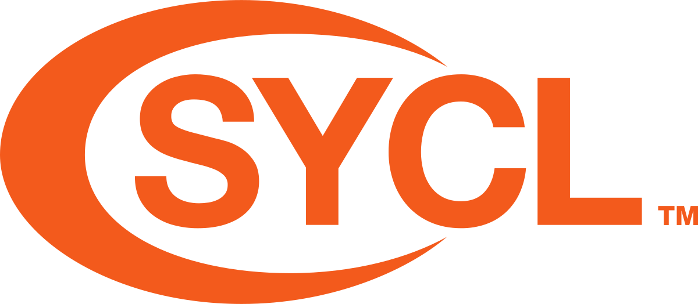
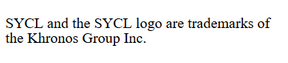
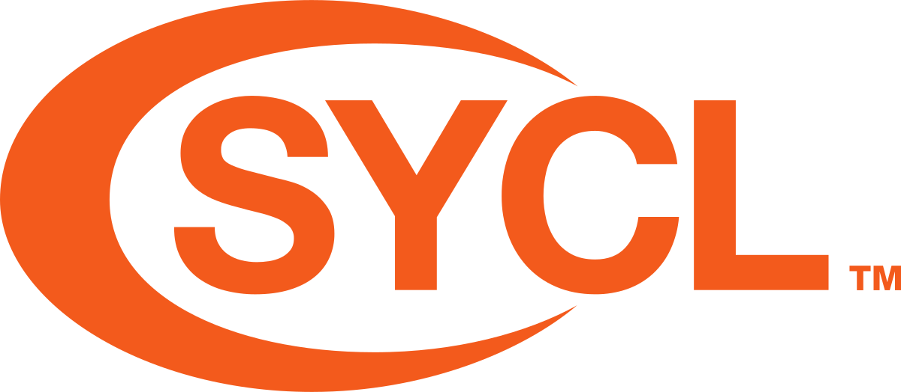
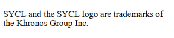
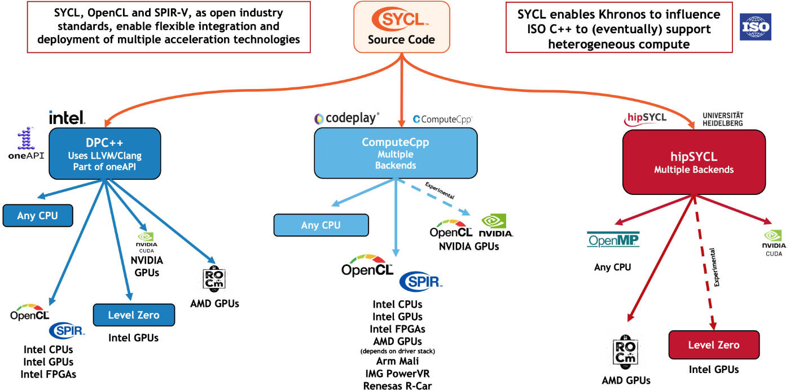

## What is SYCL?
#### What is SYCL?

SYCL is a single source, high-level, standard C++ programming model, that can target a range of heterogeneous platforms
#### What is SYCL?
A first example of SYCL code. Elements will be explained in coming sections!

#### What is SYCL?
SYCL is a **single source**, high-level, standard C++ programming model, that can target a range of heterogeneous platforms

* SYCL allows you to write both host CPU and device code in the same C++ source file
* This requires two compilation passes; one for the host code and one for the device code
#### What is SYCL?
SYCL is a single source, **high-level**, standard C++ programming model, that can target a range of heterogeneous platforms
#### What is SYCL?
SYCL is a single source, high-level **standard C++** programming model, that can target a range of heterogeneous platforms

* SYCL allows you to write standard C++
* SYCL 2020 is based on C++17
* Unlike the other implementations shown on the left there are:
* No language extensions
* No pragmas
* No mandatory attributes
## SYCL and ISO C++
* ISO C++ has some notion of concurrency via threads and futures
* and data parallelism via algorithm and numeric libraries
* Assumes single execution space and single memory
* No control of where to run (yet)
* No asynchrony of algorithms (yet)
**SYCL is aligning with and helping shape the future for heterogeneous compute in C++**
#### What is SYCL?
SYCL is a single source, high-level standard C++ programming model, that can **target a range of heterogeneous platforms**

* SYCL can target any device supported by its backend
* SYCL can target a number of different backends
SYCL has been designed to be implemented on top of a variety of backends. Current implementations support backends such as OpenCL, CUDA, HIP, OpenMP and others.
#### SYCL specification
#### SYCL implementations

#### SYCL implementations

### Implementations of a standard
* SYCL is a *standard*
* Document defines behaviour of API:
* Platform, device model
* Memory and execution model
* What the APIs are and what they do
* Implementations (like DPC++, hipSYCL, etc) *implement* the standard
* Once conformant, guarenteed all APIs are supported by the implementation
#### What a SYCL implementation looks like

* The SYCL interface is a C++ template library that developers can use to access the features of SYCL
* The same interface is used for both the host and device code
* The host is generally the CPU and is used to dispatch the parallel execution of kernels
* The device is the parallel unit used to execute the kernels, such as a GPU
#### Exercise
Code_Exercises/Exercise_1_Compiling_with_SYCL/source.cpp
Configure your environment for using SYCL and compile a source file with the SYCL compiler.
**Task**: Include the SYCL header and successfully build and run a binary.
## Intel DevCloud
1. Register for the Intel DevCloud
2. Follow instructions to set up SSH
https://devcloud.intel.com/oneapi/documentation/
### DevCloud Demo
$ ssh devcloud
$ git clone https://github.com/illuhad/syclacademy -b cluster22 --recursive
$ cd syclacademy
$ mkdir build
$ dpcpp -fsycl -o sycl-ex-1 ../Code_Exercises/Exercise_01_Compiling_with_SYCL/source.cpp
$ qsub -I -l nodes=1:gpu:ppn=2 -d .
$ ./sycl-ex-1